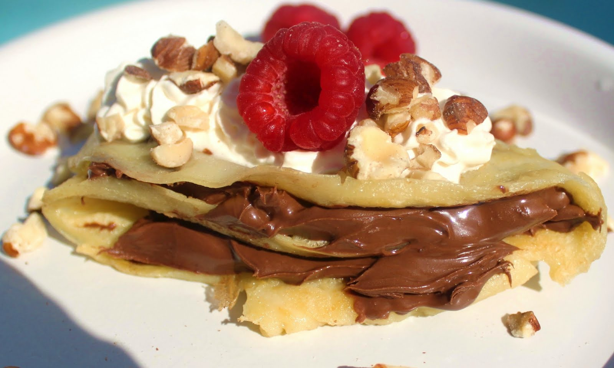
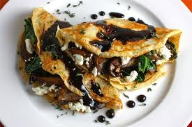
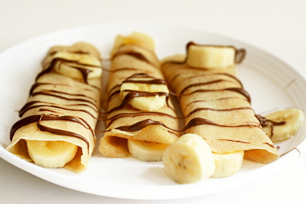

1/2 cup of all purpose flour
1 egg
1/4 cup milk
1/4 cup water
1/8 teaspoon salt
1 tablespoon butter
In a large bowl mix the flour and eggs together.
Pour in the milk and water
Add the salt and butter
mix until the batter is smooth
Heat the pan on medium
Pour the batter on the pan and cook until light brown